Links.html
Madeleen Helmer: HitteStress. https://www.steunpuntenergietransitie.nl/category/hittestress/
Loes van Hove: Klimaat Filosoof
Bert Janssen: kent goede spreker over biodiversiteit
HeatLoad: https://heatload.buildwise.be/home?locale=nl snel warmtevermogen berekenen
Samen Klimaat Bestendig
Overzicht van Hitte-CommunicatieMaterialen:
https://klimaatverbond.nl/wp-content/uploads/2024/06/20240529-Overzicht-van-communicatiematerialen_FINAL.pdf
https://klimaatverbond.nl/wp-content/uploads/2024/07/20240523-Handreiking-Tabletop-Code-Rood-Hitte.pdf
Eneco, Je huis koel zonder airco: https://www.eneco.nl/inspiratie/energie-besparen/huis-koelen-zonder-airco/
Klimaat Verbond Nederland: https://klimaatverbond.nl/hitteadaptatie/
KennisPortaal KlimaatAdaptatie
https://klimaatadaptatienederland.nl/stresstest/bijsluiter/bepalen-gevolgen/landbouw-natuur-milieu/biodiversiteit/
kennisdossiers: https://klimaatadaptatienederland.nl/kennisdossiers/
omgevingswet: https://klimaatadaptatienederland.nl/kennisdossiers/omgevingswet/
KlimaatFeiten.nl: https://www.klimaatfeiten.nl/gevolgen/natuur/biodiversiteit
Informatiepunt Leefomgeving: https://iplo.nl/thema/klimaatverandering/aanpassen-klimaatverandering-klimaatadaptatie/sectoren-klimaatadaptatie/natuur-klimaatadaptatie/
Voor de aanpak hebben het Interprovinciaal Overleg (IPO) en het ministerie van Landbouw, Visserij, Voedselzekerheid en Natuur (LVVN) in 2020 Actielijnen geformuleerd. Op basis daarvan is een Uitvoeringsprogramma Natuur geformuleerd.
Hogeschool van Amsterdam (heel veel onderzoeken): https://www.hva.nl/zoeken?search=hitte&search-results-page=3
Factsheet Hitte in de woning: https://pure.hva.nl/ws/portalfiles/portal/47906916/Factsheets-RAAK-Hitte_in_de_woning-HvA-spread_1_.pdf

Hoe biobased gevelmaterialen bijdragen aan het verminderen van hittestress:
https://www.hva.nl/nieuws/2025/6/hoe-biobased-gevelmaterialen-bijdragen-aan-het-verminderen-van-hitte-stress
Mindmap: https://www.hittebestendigestad.nl/mindmap/
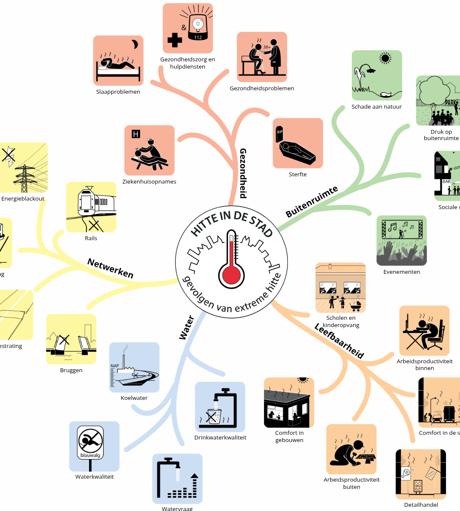
(Kosten)effectiviteit van maatregelen:
https://www.rvo.nl/onderwerpen/klimaatadaptatie-gebouwde-omgeving/maatregelen/kosteneffectiviteit
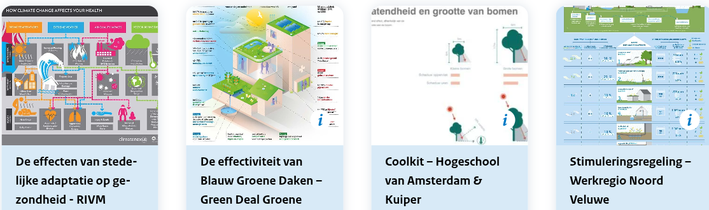
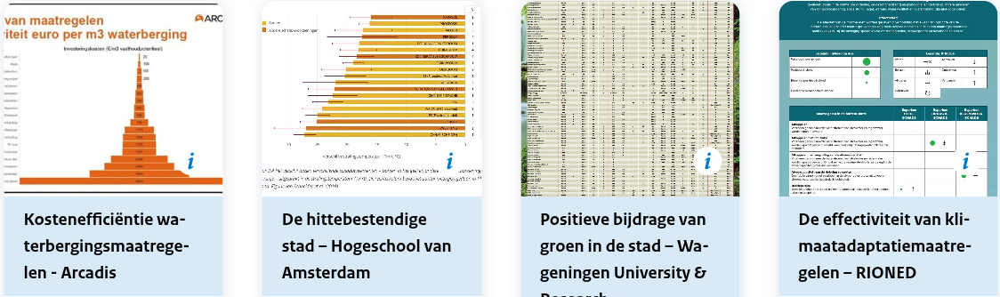
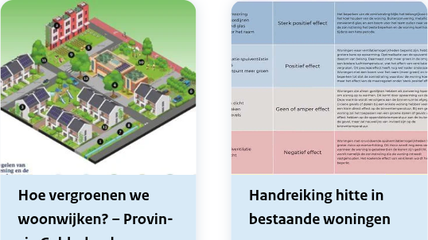
https://www.rvo.nl/onderwerpen/klimaatadaptatie-gebouwde-omgeving/hitte/menukaart-hitte
Rapport KlimaatData
https://topsectorenergie.nl/nl/kennisbank/toekomstige-klimaatdata-voor-de-gebouwde-omgeving/
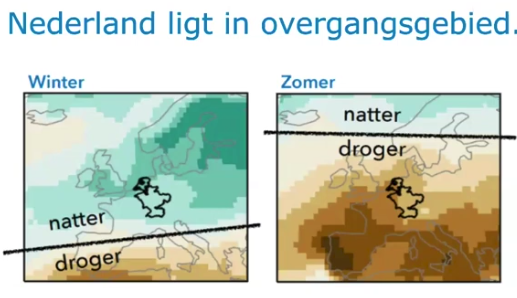
Impact van vegetatie op de hittestress in de woning
https://www.merosch.nl/media/pages/actueel-kennis/nu-in-tvvl-magazine-impact-vegetatie-op-hittestress-in-de-woning/97abbff77d-1761820860/artikel-impact-van-vegetatie-op-de-hittestress-in-de-woning.pdf
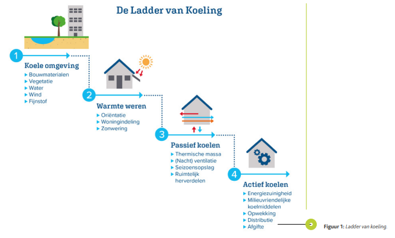
VTW publicaties: https://vtw.nl/publicaties/handreiking/duurzaamheid/klimaatadaptatie-en-biodiversiteit/
VTW = Vereniging van Toezichthouders in WoningCooperaties
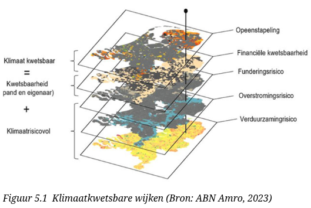
KlimaatSchadeSchatter (verouderd 2020): https://www.klimaatschadeschatter.nl
Klimaat Viewer: https://www.klimaateffectatlas.nl/nl/kaartviewer
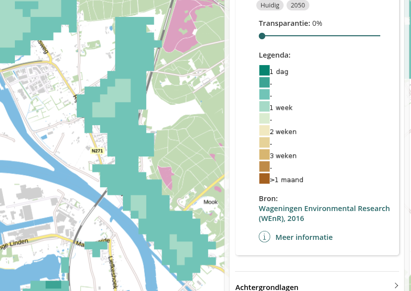
ander klimaat map: https://tool.coollifeproject.eu/map
Klimaat Risico's in Nederland: https://www.pbl.nl/publicaties/klimaatrisicos-in-nederland
De Groene Amsterdammer: Goed geïsoleerd, maar bloedjeheet
https://www.groene.nl/artikel/goed-geisoleerd-maar-bloedjeheet
Steunpunt energietransitie: https://www.steunpuntenergietransitie.nl/glossary/hittestress/
https://www.steunpuntenergietransitie.nl/klimaatborrel/klimaatborrel-12-september-2024-over-hittestress/
rapport Klimaat en Samenleving - Burgerperspectieven
Sociaal en Cultureel Planbureau: https://www.scp.nl/documenten/2025/04/17/klimaat-en-samenleving
Het rapport Klimaat en Samenleving - Burgerperspectieven, laat zien hoe mensen in Nederland denken over het klimaat en het beleid dat daarbij hoort. Wat zijn hun zorgen, wat vinden ze belangrijk, en voelen ze zich betrokken bij de keuzes die worden gemaakt?
Energie Kennsibank: https://energiekennisbank.nl/blog/2023/05/01/hittestress/
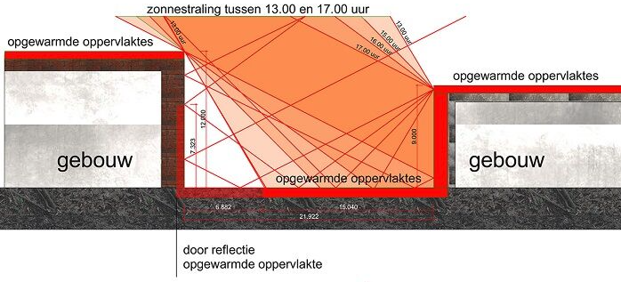
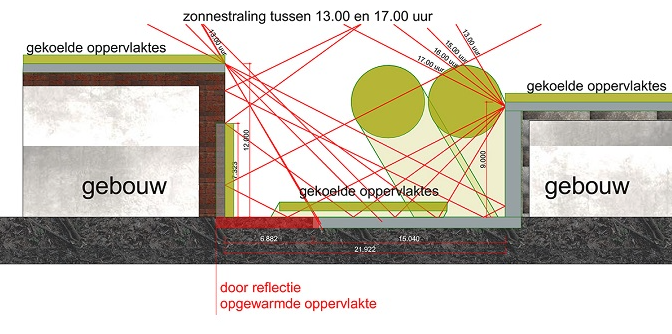
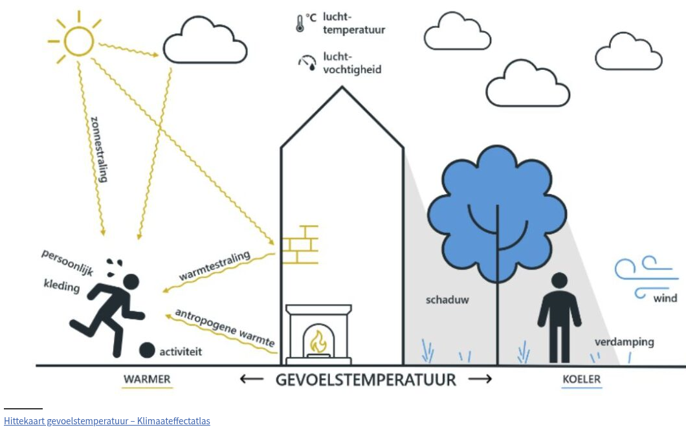
Energie zuinig Wonen, Minder is Meer: https://www.architectuurcentrumnijmegen.nl/single-post/8-mrt-acn-presenteert-energiezuinig-wonen-meer-is-minder
met veel video's (o.a. met Loes van Wersh)
RHO Adviseurs: https://www.rho.nl/biodiversiteit-en-klimaatadaptatie-in-het-ontwerp/
Door de natuur in het ontwerp te integreren, kunnen we niet alleen inspelen op de groeiende vraag naar woonruimte, maar ook bijdragen aan een duurzamer, klimaatbestendiger en ecologisch rijker landschap, waarin stad en platteland verbonden zijn.
Act Right: https://actright.nl/expertises/gezonde-leefomgeving/klimaatadaptatie-en-biodiversiteit/
Act Right helpt overheden, woningcorporaties, bedrijven en netbeheerders om klimaatadaptatie en biodiversiteit te integreren in beleid, ontwerp en uitvoering. We verbinden ecologische inzichten met ruimtelijke ontwikkeling en organisatievraagstukken.
Merosch Voorbeelden: https://www.merosch.nl/projecten/thema-s:klimaatadaptatie-biodiversiteit
Voorbeeld Universiteit Leiden: https://www.universiteitleiden.nl/dossiers/de-duurzame-universiteit/duurzame-campus/biodiversiteit
CoolLife: https://coollife.revolve.media/about/
TopSectorEnergie: https://topsectorenergie.nl/nl/kennisbank/groen-in-de-gebouwde-omgeving/